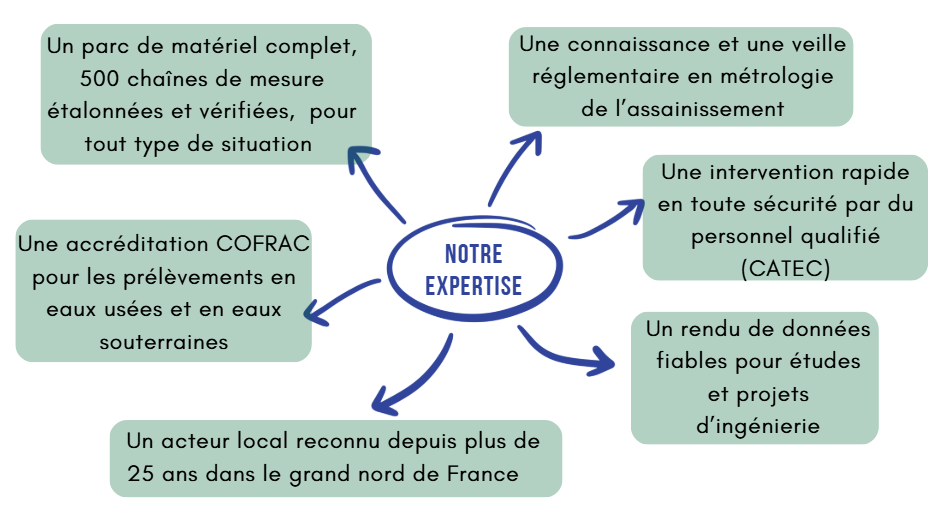
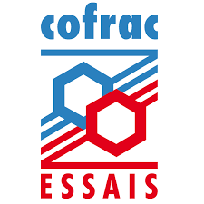

À propos
Depuis 2000, OTECH accompagne collectivités et entreprises sur la gestion de l'eau : assainissement, eaux de rejet, eaux pluviales, eaux potables, eaux souterraines et superficielles. Nous vous apportons expertises terrain, contrôles réglementaires et solutions sur mesure grâce à notre :
- Réactivité
- Large gamme de matériels
- Savoir-faire professionnel


Accréditation numéro 1-5809
Portée disponible sur www.cofrac.fr